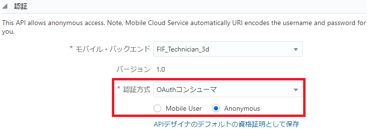
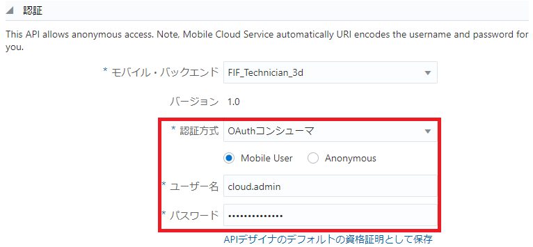
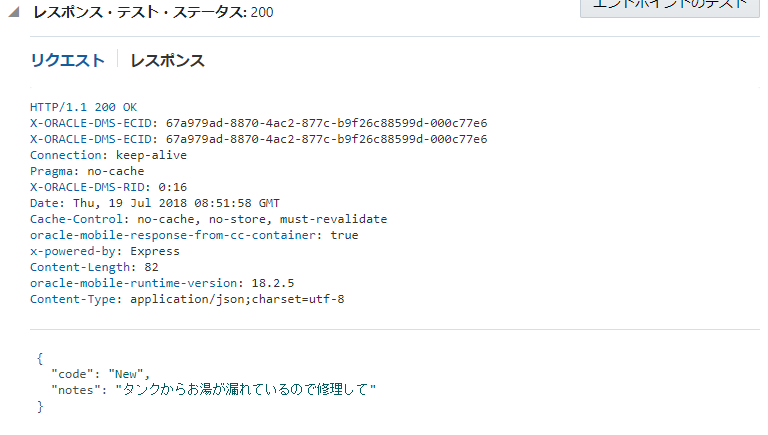

Node.jsによるAPIの実装
ここではAPIを実装するためにfif_incidentreport_xx.jsを編集し、AMCeにアップロードしてテストしてみます。
Step-1 エンドポイント「GET /incidents/{id}/status」に対応したスタブを変更します。次の例では「result.notes」のテキストを変更し、「result」オブジェクトをログ・メッセージとして書き出す処理を追加しています。
GET /incidents/{id}/status 変更前
service.get('/mobile/custom/FIF_IncidentReport_3d/incidents/:id/status', function(req,res) {
var result = {};
var statusCode = 200;
if (statusCode == 200){
var acceptType = req.accepts(['application/json']);
if (acceptType == 'application/json'){
result = { "code": "New",
"notes": "My hot water tank's model is AB234"
};
}
}
res.status(statusCode).send(result);
});
GET /incidents/{id}/status 変更後
service.get(
'/mobile/custom/FIF_IncidentReport_xx/incidents/:id/status',
function(req,res) {
var result = {};
var statusCode = 200;
if (statusCode == 200){
var acceptType = req.accepts(['application/json']);
if (acceptType == 'application/json'){
result = { "code": "New",
"notes": "タンクからお湯が漏れているので修理して"
};
}
}
console.log('戻り値: ' + JSON.stringify(result));
res.send(statusCode, result);
});
注意：マルチ・バイト文字を含む場合、ソース・ファイルfif_incidentreport_xx.jsはUTF-8で保存する必要があります。
Step-2 fif_incidentreport_xxフォルダをZIP形式に圧縮します。
Step-3 AMCeのサービス・コンソールで、カスタムAPI「FIF_IncidentReport_xx」のAPIデザイナの「実装」ページを開き、ZIPファイルを「実装アーカイブをアップロードまたはドラッグします。」と書かれたボックスにドラッグします。

図：fif_incidentreport_xx.jsを含むZIPファイルをドラッグ
Step-4 実装が追加されたら、画面右上の「テスト」ボタンをクリックします。

図：実装が追加された状態
Step-5 エンドポイント「GET /incidents/{id}/status」をテストします。「id」として適当な整数を指定し、「認証」パネルには次の値を入力します。
表：エンドポイント「GET /incidents/{id}/status」のテスト
| 入力項目 | 入力する値 |
|---|---|
| モバイル・バックエンド | FIF_Technician_xx |
| 認証方式 | 「Current User」、「HTTP基本」または「OAuthコンシューマ」 |

図：エンドポイント「GET /incidents/{id}/status」のテスト

図：認証方式を「HTTP基本 － Anonymous」と選択した場合

図：認証方式を「HTTP基本 － Mobile User」と選択した場合

図：認証方式を「OAuthコンシューマ － Anonymous」と選択した場合

図：認証方式を「OAuthコンシューマ － Mobile User」と選択した場合
入力が終わったら「エンドポイントのテスト」ボタンをクリックします。
Step-6 レスポンスのHTTPステータス・コードとして200が返ってくることを確認します。また、今回の変更例のようにAPI実装にログ・メッセージの書き出し処理を追加した場合は、モバイル・バックエンドの「診断」ページの「ログ」パネルで、メッセージが出力されていることを確認します。

図：レスポンスのHTTPステータス・コードとして200が返ってくることを確認